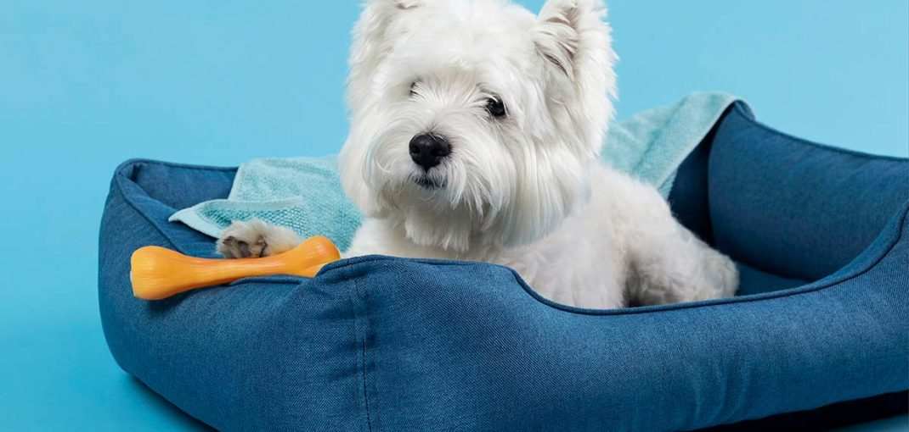

How to Choose the Right Bully Stick for Your Dog
Below is an excerpt of porch.com’s article “Moving With Pets? We Have the Experts’ Advice to Do It Properly”. For additional moving tips, check out the rest of their article here.
How can we help our pets adjust after moving to a new home?
“Pets entering a new environment can be tough! Dogs and Cats’ territorial instincts make them very attached to their surroundings, and abruptly changing those surroundings may cause unneeded anxiety. Often our pets don’t know how to cope with anxiety healthily. This can cause them to chew up furniture, scratch up floors, and engage in other destructive actions. Here are three suggestions for how to best integrate your pet into your new home and avoid these struggles.
Bring along their favorite blankets, toys, and furniture. This should help put them at ease. It is important that your furry friend is able to relax and feel comfortable in their new home, so familiar sights and scents will help them make the transition. From their cage and water bowls to their treats and supplements, imagine what makes your pet feel at home.
Engage in familiar routines. Whether waking up early,
waiting for dinner time or hanging at the dog park:
there are daily activities that mark the flow of your
pet’s day. Try to match these habits as closely as you
can, so your dog will understand that their life isn’t
changing, just their location.Be extra generous. We show love to our pets on a
daily basis, but ratcheting up the attention can help
both, fight the anxiety your pet may be feeling, and
give them positive associations for their new home.
Being able to focus on chewing a bone or chasing a
laser will start to break down apprehensions your
dog or cat may have about moving.